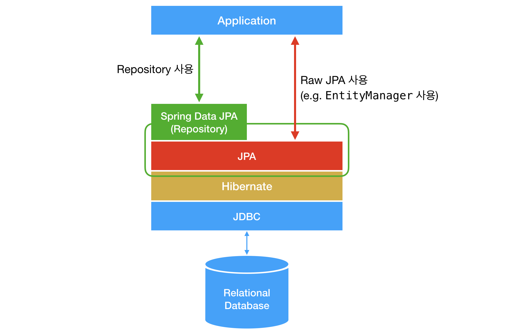
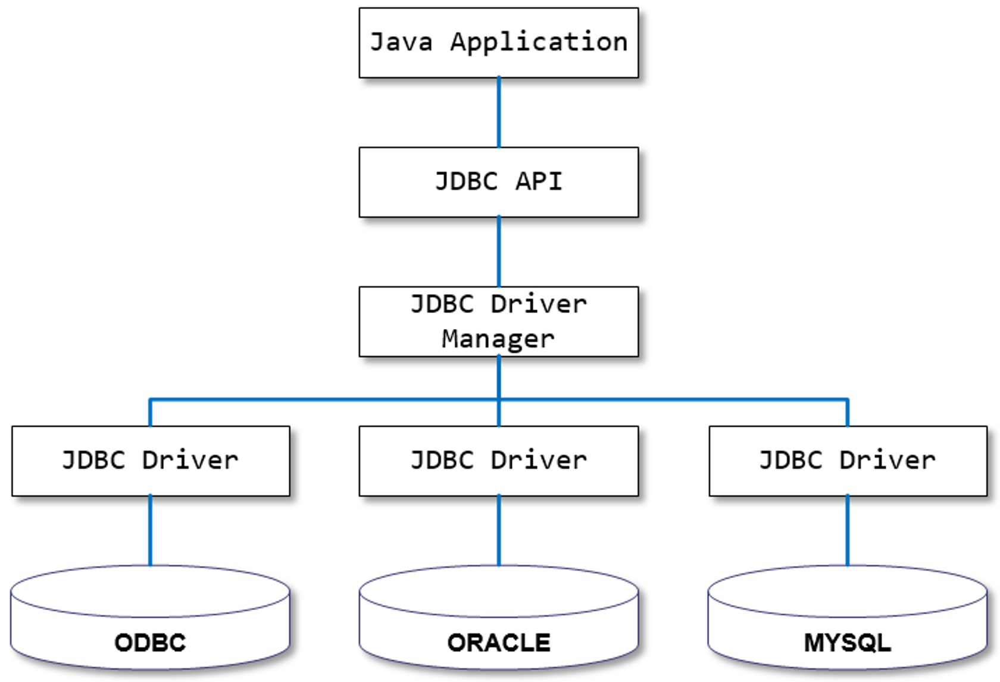
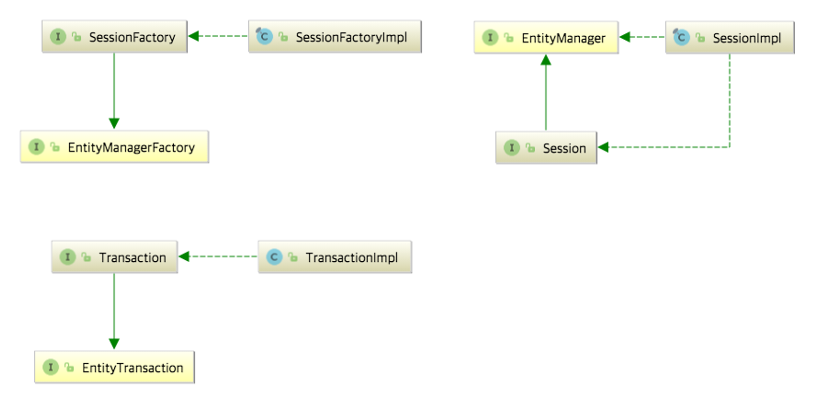
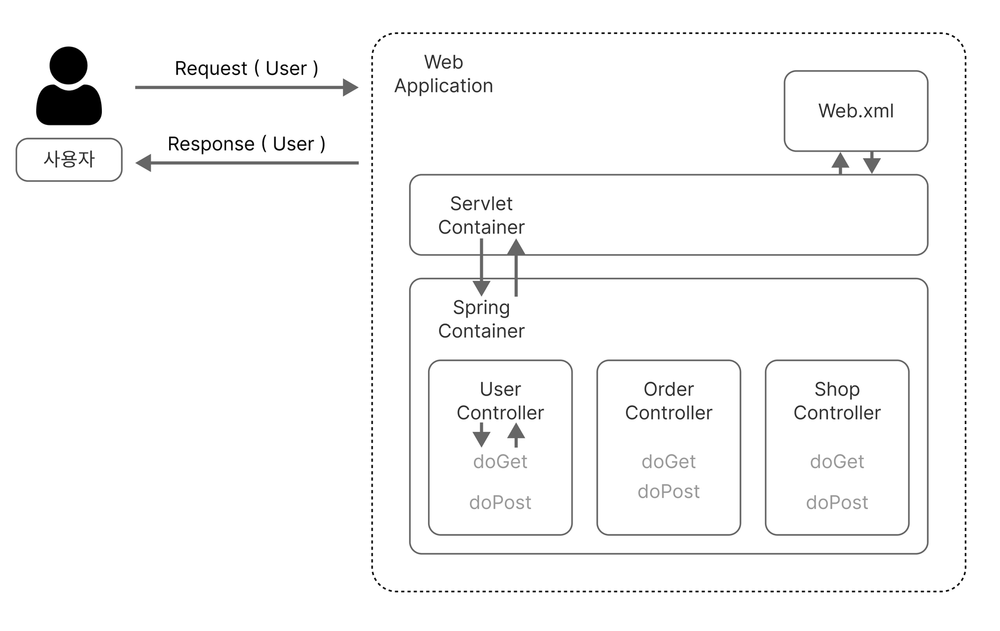

2023년 06월 13일
[2] 스프링의 기본 아키텍트 (Data & Web)
Backend
SpringBoot
Java
스프링과 스프링 부트에 대해 천천히 개념 정리하며 공부하기 위한 포스팅입니다.

Spring Architect - Data Acess / Intergretion

Java Spring with Data
JDBC

자바에서 데이터베이스에 접속할 수 있도록하는 자바 API
- 특징
- 자바 표준 데이터 제어 인터페이스
- 각 DBMS에 맞는 Driver 와 Java를 연결 → DBMS 종류와 상관 없이 동일한 코드를 사용
ORM
객체와 관계형 데이터베이스의 데이터를 자동으로 연결해주는 것
JPA
자바의 ORM 기술 표준 인터페이스
- DB 제어를 도와주는 자바 인터페이스
- 테이브로가 자바 객체를 매핑하여 객체지향적 관리에 사용
- JDBC와 애플리케이션 사이에서 동작
Hibernate?

JPA의 구현체
Spring Data JPA
JPA 기반 리포지토리를 쉽게 구현할 수 있도록 해주는 모듈
- JPA를 추상화 시킨 것
- Repository 를 제공
Transactions
데이터 베이스의 상태를 변화시키기 위해 수행되는 작업의 단위
- 특징
-
원자성
한 트랜젝션 = 한 작업 ( ex. 모두 성공 or 모두 실패 )
-
일관성
일관성 있는 데이터베이스 상태 유지
-
격리성
트랜잭션 별 영향의 분리
-
지속성
트랜잭션 성공 = 결과의 저장
-
Spring Architect - Web
Web Socket
- Web 통신 프로토콜 중 하나
- 서버와 브라우저 ( 클라이언트 ) 간 연결을 유지한 상태로 데이터를 교환
- 데이터는 '패킷 (packet)' 형태로 전달
Servlet
- 웹 프로그래밍에서 클라이언트 요청을 처리하고, 처리 결과를 클라이언트에 전송하는 기술
특징
- 클라이언트 요청에 대해 동적으로 작동하는 웹 어플리케이션 컴포넌트
- html을 사용하여 요청에 응답
- iava thread를 통해서 동작
- Controller로 이용
- HTTP 프로토콜 서비스를 지원하는 HttpServlet 클래스 사용
- HTML 변경 시 Servlet의 재컴파일이 필요
동작

- 사용자의 HTTP Request가 서블릿 컨테이너로 전송
- 서블릿 컨테이너는
HttpServeletRequest,HttpServletResponse두 객체를 생성 - web.xml은 사용자가 요청한 URL을 통해 어느 서블릿에 요청한 것인지 체킹
- 해당 서블릿에서 service 메소드를 호출한 후 클라이언트의 요청 종류에 따라 doGet 같은 메소드 호출
- doGet 메소드는 동적 페이지를 생성한 후
HttpServletResponse객체에 응답을 전송 - 응답이 끝나면 두 객체
HttpServletRequest,HttpServletResponse를 삭제
Portlet
- 웹 페이지 안에 있는 작은 창
- 포탈 페이지 내에서 자유롭게 배치하는 웹 컴포넌트
- 재사용이 가능한 웹 구성요소